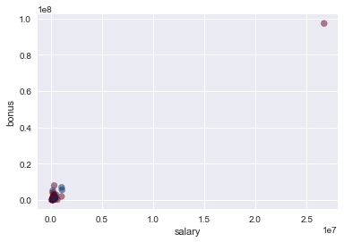
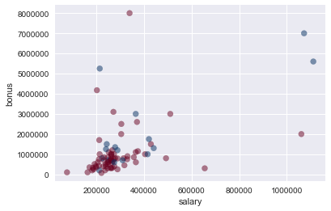

Understanding the Dataset
Summarize for us the goal of this project and how machine learning is useful in trying to accomplish it. As part of your answer, give some background on the dataset and how it can be used to answer the project question. Were there any outliers in the data when you got it, and how did you handle those?
In 2000, Enron was one of the largest companies in the United States. By 2002, it had collapsed into bankruptcy due to widespread corporate fraud. In the resulting Federal investigation, a significant amount of typically confidential information entered into the public record, including tens of thousands of emails and detailed financial data for top executives.
The goal of this project will be to use publicly available data released from the Federal investigation into fraud at Enron, and use it to create a person of interest identifier. This identifier will use email and financial data from Enron executives to try and find individuals who are persons of interest (POI). For the purpose of this project, a POI is defined as an employee who was indicted, reached a settlement or plea deal with the government, or testified in exchange for prosecution immunity.
To accomplish the goal of creating a POI identifier, we will be utilizing machine learning algorithms. What makes machine learning useful is its ability to quickly learn from a dataset and then categorize or make predictions on data the machine has never seen before, which is exactly what we need to create our POI identifier.
Data Exploration
Before we get started creating our POI identifier, let's examine the data we are working with. We can look at certain characteristics of the data (e.g. total number of data points) below:
import pickle
enron_data = pickle.load(open("../final_project/final_project_dataset.pkl", "r"))
print 'Size of Enron Dataset:', len(enron_data)
print "Number of features for each person:", len(enron_data["SKILLING JEFFREY K"])
count = 0
for person in enron_data:
if enron_data[person]['poi'] == 1:
count +=1
print "Number of POI's:", count
print "Number of Non-POI's", len(enron_data) - count
sal_count = 0
for person in enron_data:
if enron_data[person]['salary'] != 'NaN':
sal_count += 1
print "People with quantifiable salaries:", sal_count
poi_sal_count = 0
for person in enron_data:
if (enron_data[person]['salary'] != 'NaN' and enron_data[person]['poi'] == 1):
poi_sal_count += 1
print "POI's with quantifiable salaries:", poi_sal_count
email_count = 0
for person in enron_data:
if enron_data[person]['email_address'] != 'NaN':
email_count += 1
print "People with known email addresses:", email_count
poi_email_count = 0
for person in enron_data:
if (enron_data[person]['email_address'] != 'NaN' and enron_data[person]['poi'] == 1):
poi_email_count += 1
print "POI's with known email addresses:", poi_email_count
tot_pay_nan_count = 0
for person in enron_data:
if enron_data[person]['total_payments'] == 'NaN':
tot_pay_nan_count += 1
print 'Number of people with NaN for total payments:', tot_pay_nan_count
poi_tot_pay_nan_count = 0
for person in enron_data:
if (enron_data[person]['total_payments'] == 'NaN' and enron_data[person]['poi']):
poi_tot_pay_nan_count += 1
print "Number of POI's with NaN for total payments:", poi_tot_pay_nan_count
Size of Enron Dataset: 146
Number of features for each person: 21
Number of POI's: 18
Number of Non-POI's 128
People with quantifiable salaries: 95
POI's with quantifiable salaries: 17
People with known email addresses: 111
POI's with known email addresses: 18
Number of people with NaN for total payments: 21
Number of POI's with NaN for total payments: 0
There are 146 data points with 21 different features (14 financial features, 6 email features, and 1 label to indicate POI's) included for each point. 18 of these points are POI's.
Outlier Investigation
Next let's look to see if their are any outliers by looking at the data for salaries and bonuses.
import sys
import matplotlib.pyplot as plt
import seaborn as sns
import pandas as pd
import numpy as np
%matplotlib inline
sys.path.append("../tools/")
from feature_format import featureFormat, targetFeatureSplit
data_dict = pickle.load( open("../final_project/final_project_dataset.pkl", "r") )
def enron_outliers(f1, f2, total = None):
'''Plot features from dataframe and list potential outliers for bonus and salary.'''
if total == 'remove':
#remove 'TOTAL' from dictionary
data_dict.pop('TOTAL', 0)
#convert data_dict to pandas df
df = pd.DataFrame.from_records(list(data_dict.values()))
employees = pd.Series(list(data_dict.keys()))
df.set_index(employees, inplace=True)
new_features_list = df.columns.values
#scatterplot of salary and bonus
plt.scatter(df[f1], df[f2], alpha = 0.5, c = df['poi'], cmap=plt.cm.RdBu)
plt.xlabel(f1)
plt.ylabel(f2)
plt.show
print "Potential Outliers:"
for employee in data_dict:
if (data_dict[employee]['salary'] != 'NaN') and \
(data_dict[employee]['bonus'] != 'NaN'):
if (data_dict[employee]['salary'] > 1000000) and (data_dict[employee]['bonus'] > 5000000):
print(employee)
enron_outliers('salary', 'bonus')
Potential Outliers:
LAY KENNETH L
SKILLING JEFFREY K
TOTAL

Looking at the above scatterplot there is one combination of salary and bonus that is significantly higher than all the others which means it could be an outlier. To check what data points this could be we can print all executives with salary above \$1,000,000 and bonus above $5,000,000. Of our potential outliers, the first two are LAY KENNETH L and SKILLING JEFFREY K, the former chairman and CEO of Enron respectively, as well as persons of interest, so we will leave them in the dataset. However, the last potential outlier is TOTAL which represents the total salary and bonuses of every person in the dataset. Since this information will not help us create our POI identifier, we can remove it from the dataset. The data without the outlier has been plotted below.
enron_outliers('salary', 'bonus', total = 'remove')
Potential Outliers:
LAY KENNETH L
SKILLING JEFFREY K

Next, I wanted to find and remove data points with all or nearly all missing data
#Find employees with the most missing data
for name in data_dict:
nan_count = 0
data_point = data_dict[name]
for feature in data_point:
if data_point[feature] == 'NaN':
nan_count += 1
if nan_count > 18:
print name
print data_point
LOCKHART EUGENE E
{'salary': 'NaN', 'to_messages': 'NaN', 'deferral_payments': 'NaN', 'total_payments': 'NaN', 'exercised_stock_options': 'NaN', 'bonus': 'NaN', 'restricted_stock': 'NaN', 'shared_receipt_with_poi': 'NaN', 'restricted_stock_deferred': 'NaN', 'total_stock_value': 'NaN', 'expenses': 'NaN', 'loan_advances': 'NaN', 'from_messages': 'NaN', 'other': 'NaN', 'from_this_person_to_poi': 'NaN', 'poi': False, 'director_fees': 'NaN', 'deferred_income': 'NaN', 'long_term_incentive': 'NaN', 'email_address': 'NaN', 'from_poi_to_this_person': 'NaN'}
#Remove Eugene Lockhart from data_dict
del data_dict['LOCKHART EUGENE E']
I was able to find and remove one data point, Eugene E. Lockhart, that had missing data for all features except for the POI feature.
Optimize Feature Selection/Engineering
What features did you end up using in your POI identifier, and what selection process did you use to pick them? Did you have to do any scaling? Why or why not? As part of the assignment, you should attempt to engineer your own feature that does not come ready-made in the dataset -- explain what feature you tried to make, and the rationale behind it. (You do not necessarily have to use it in the final analysis, only engineer and test it.) In your feature selection step, if you used an algorithm like a decision tree, please also give the feature importances of the features that you use, and if you used an automated feature selection function like SelectKBest, please report the feature scores and reasons for your choice of parameter values.
Engineering New Features
In addition to the existing features, I decided to create three new ones:
- fraction_to_poi - The proportion of a person's sent emails that were sent to a POI
- fraction_from_poi - The proportion of a person's receieved emails that were sent from a POI
- fraction_exercised_stock - The proportion of a person's exercised stock options vs. their total stock
The idea behind creating the first two features is that POI's may email other POI's at higher rates than non-POI's. Therefore, these features can be used to identify whether an employee shared the majority of their emails with POI's.
Similarly, the final feature was made with the intuition that POI's may have higher amounts of exercised stock options when compared to their total stock options.
def computeFraction( poi_messages, all_messages ):
""" given a number messages to/from POI (numerator)
and number of all messages to/from a person (denominator),
return the fraction of messages to/from that person
that are from/to a POI
"""
if (poi_messages == "NaN" or all_messages == "NaN"):
fraction = 0
else:
fraction = float(poi_messages) / float(all_messages)
return fraction
for name in data_dict:
data_point = data_dict[name]
from_poi_to_this_person = data_point["from_poi_to_this_person"]
to_messages = data_point["to_messages"]
fraction_from_poi = computeFraction( from_poi_to_this_person, to_messages )
data_point["fraction_from_poi"] = fraction_from_poi
from_this_person_to_poi = data_point["from_this_person_to_poi"]
from_messages = data_point["from_messages"]
fraction_to_poi = computeFraction( from_this_person_to_poi, from_messages )
data_point["fraction_to_poi"] = fraction_to_poi
exercised_stock_options = data_point['exercised_stock_options']
total_stock_value = data_point['total_stock_value']
fraction_exercised_stock = computeFraction( exercised_stock_options, total_stock_value)
data_point['fraction_exercised_stock'] = fraction_exercised_stock
from sklearn.model_selection import train_test_split
features_list = ['poi','salary', 'deferral_payments', 'total_payments', 'loan_advances', 'bonus', 'restricted_stock_deferred',
'deferred_income', 'total_stock_value', 'expenses', 'exercised_stock_options', 'other',
'long_term_incentive', 'restricted_stock', 'director_fees', 'shared_receipt_with_poi', "fraction_from_poi",
"fraction_to_poi", 'fraction_exercised_stock']
#split training and testing data
data = featureFormat(data_dict, features_list)
labels, features = targetFeatureSplit(data)
features_train, features_test, labels_train, labels_test = train_test_split(
features, labels, test_size = 0.4, random_state = 42, stratify = labels)
Feature Selection
In order to pare down the number of features, univariate feature selection was done using sci-kit learn's SelectKBest algorithm. I decided to use 10 of the 22 available features and SelectKBest assigned scores to each feature, returning the 10 with the highest scores.
from sklearn.feature_selection import SelectKBest
from sklearn.naive_bayes import GaussianNB
from sklearn.pipeline import Pipeline
skb = SelectKBest(k = 10)
gnb = GaussianNB()
pipeline = Pipeline(steps = [('skb', skb), ('gnb', gnb)])
pipeline.fit(features_train, labels_train)
#indices for features chosen by SelectKBest
skb_feat_index = skb.get_support(indices = True)
#Make a dictionary of features with their scores
my_features_score = {}
for i in skb_feat_index:
my_features_score[features_list[i + 1]] = skb.scores_[i]
#print my_features_score
my_features_list = my_features_score.keys()
my_features_list.insert(0, 'poi')
#print my_features_list
| feature | score |
|---|---|
| total_stock_value | 24.61 |
| exercised_stock_options | 23.72 |
| salary | 20.34 |
| bonus | 15.76 |
| deferred_income | 11.77 |
| total_payments | 9.07 |
| loan_advances | 7.35 |
| other | 7.31 |
| long_term_incentive | 5.52 |
Above is a table of the 10 features given by SelectKBest along with their scores. As it turns out, none of the engineered features ended up in the top 10, which I found surprising.
Feature Scaling
Feauture scaling of the data was not necessary as PCA was not performed. In addition, the machine learning algorithms I decided to use (Gaussian Naive Bayes and Random Forest) do not require scaling as explained by this forum post. To summarize, the Naive Bayes algorithm does not require feature scaling because it generates probabilities for each feature individually, assuming no correlation between any of the features. The Decision Trees used in Random Forests also do not require feature scaling since tree splits are based on each feature and are independent of one another.
Pick and Tune an Algorithm
What algorithm did you end up using? What other one(s) did you try? How did model performance differ between algorithms?
Pick an Algorithm
The first algorithm I decided to try was Naive Bayes. Before implementing the algorithm, the data was split into training and testing data using train_test_split. I found that evaluation metrics (accuracy, precision, recall, and f1 score) for Naive Bayes were considerably better when using the stratify parameter for train_test_split than when not using the parameter.
from sklearn.metrics import accuracy_score, classification_report
data = featureFormat(data_dict, my_features_list)
labels, features = targetFeatureSplit(data)
features_train, features_test, labels_train, labels_test = train_test_split(
features, labels, test_size = 0.4, random_state = 42, stratify = labels)
clf = GaussianNB()
clf.fit(features_train, labels_train)
pred = clf.predict(features_test)
accuracy = accuracy_score(pred, labels_test)
print "Naive Bayes"
print "accuracy:",accuracy
target_names = ["Non-POI", "POI"]
print "Classification Report:"
print classification_report(y_true = labels_test, y_pred = pred, target_names = target_names)
Naive Bayes
accuracy: 0.810344827586
Classification Report:
precision recall f1-score support
Non-POI 0.88 0.90 0.89 51
POI 0.17 0.14 0.15 7
avg / total 0.80 0.81 0.80 58
The second algorithm I tried was a Random Forest Classifier. Comparing evaluation metrics between this classifier and Naive Bayes, the only differences were that accuracy, average recall, and average f1-score were slightly higher for Random Forest, while average precision was the same for both algorithms. That said, since the Random Forest Classifier performed the best of the two algorithms I tried, I decided to go with this algorithm to use in the POI identifier.
from sklearn.ensemble import RandomForestClassifier
clf = RandomForestClassifier(n_estimators = 100, n_jobs = -1)
clf.fit(features_train, labels_train)
pred = clf.predict(features_test)
accuracy = accuracy_score(pred, labels_test)
print "Random Forest"
print "accuracy:",accuracy
print "Classification Report:"
print classification_report(y_true = labels_test, y_pred = pred, target_names = target_names)
Random Forest
accuracy: 0.844827586207
Classification Report:
precision recall f1-score support
Non-POI 0.89 0.94 0.91 51
POI 0.25 0.14 0.18 7
avg / total 0.81 0.84 0.83 58
Algorithm Tuning
What does it mean to tune the parameters of an algorithm, and what can happen if you don’t do this well? How did you tune the parameters of your particular algorithm? What parameters did you tune? (Some algorithms do not have parameters that you need to tune -- if this is the case for the one you picked, identify and briefly explain how you would have done it for the model that was not your final choice or a different model that does utilize parameter tuning, e.g. a decision tree classifier).
When one says that they are tuning the parameters of an algorithm, this means that they are testing different parameter values for the algorithm they are using. The goal of this is to indentify the optimal combination of parameters that provides the best results, while maintaining performance. What can happen if one does not tune the parameters of their algorithm well, is that either the algorithm will provide results that are not as good as they could potentially be or the code will take an undesirably long time to run.
Tuning was done using GridSearchCV to go through multiple combinations of parameters tunes to find the optimal combination and then return a classifier using these optimal parameter tunes. The Random Forest paremeters tuned were:
- min_samples_split - The minimum number of samples required to split an internal node
- max_features - The number of features to consider when looking for the best split
- criterion - Which measure of impurity to use for the decision tree splits
from sklearn.model_selection import GridSearchCV
rfc = RandomForestClassifier(n_estimators = 100, n_jobs = -1)
parameters = {'min_samples_split':[2, 5, 10, 20],
'max_features':('auto', 'log2'),
'criterion':('gini', 'entropy')
}
clf = GridSearchCV(rfc, parameters, n_jobs = -1)
clf.fit(features_train, labels_train)
pred = clf.predict(features_test)
accuracy = accuracy_score(pred, labels_test)
print "Random Forest w/ Tuning"
print "accuracy:",accuracy
print "Classification Report:"
print classification_report(y_true = labels_test, y_pred = pred, target_names = target_names)
print "Best Parameters:",clf.best_params_
Random Forest w/ Tuning
accuracy: 0.844827586207
Classification Report:
precision recall f1-score support
Non-POI 0.89 0.94 0.91 51
POI 0.25 0.14 0.18 7
avg / total 0.81 0.84 0.83 58
Best Parameters: {'max_features': 'auto', 'min_samples_split': 2, 'criterion': 'entropy'}
from tester import dump_classifier_and_data
#dump classifier, dictionary of data, and list of features into pkl files
dump_classifier_and_data(clf, data_dict, my_features_list)
C:\Users\Quentin\Anaconda2\lib\site-packages\sklearn\cross_validation.py:41: DeprecationWarning: This module was deprecated in version 0.18 in favor of the model_selection module into which all the refactored classes and functions are moved. Also note that the interface of the new CV iterators are different from that of this module. This module will be removed in 0.20.
"This module will be removed in 0.20.", DeprecationWarning)
Validate and Evaluate
What is validation, and what’s a classic mistake you can make if you do it wrong? How did you validate your analysis?
Validation
Validation is the process of splitting one's data into testing and training sets, and then applying one's algorithm or model on the testing set to gauge how effective the algorithm/model is at making predictions. A classic mistake when it comes to validation is forgetting to split the data into testing and training sets and using the same data to train and test on. The problem this creates, is that the algorithm will overfit the data and have high variance. In other words, this means that the algorithm will be very good at "memorizing" how to classify the the dataset given to it, and since the training and testing dataset are the same, it will appear to perform well. However, if the algorithm is given a new dataset it has never seen before, it will perform poorly since, it is only capable of "memorizing" what to do when given the original dataset. In short, the overfit algorithm will be unable to generalize to new data.
As mentioned previously, train_test_split was used as part of validation to split the data into training and testing sets.
Evaluation and Conclusion
Give at least 2 evaluation metrics and your average performance for each of them. Explain an interpretation of your metrics that says something human-understandable about your algorithm’s performance.
Two of the evaluation metrics we used to asses our algorithm's performance were precision and recall. The precision for POI's using the Random Forest Classifier was 0.20 and recall was 0.14. What this means is that out of all the people in the dataset labelled by the algorithm as POI's, 20% of them are actually POI's. Also, out of all the people in the dataset that were truly POI's, 14% of them were correctly labelled by the algorithm as POI's. That said, precision and recall for Non-POI's were much higher, 0.89 and 0.92 respectively, indicating that our algorithm is better at determining when a person is not a POI than whether someone actually is one. This is probably due to the fact that there were a relatively small number of POI's in the dataset, so the algorithm had less data to work with when learning how to determine if a person truly is a POI.
If I had more time, I would like to try and improve the recall and precision for POI's, which would be difficult given the current lack of data for POI's. Perhaps introducing text data from the email corpus could provide more information improve the performance of the POI identifier. Using text learning could uncover possible words or phrases that appear frequently in emails written by POI's.